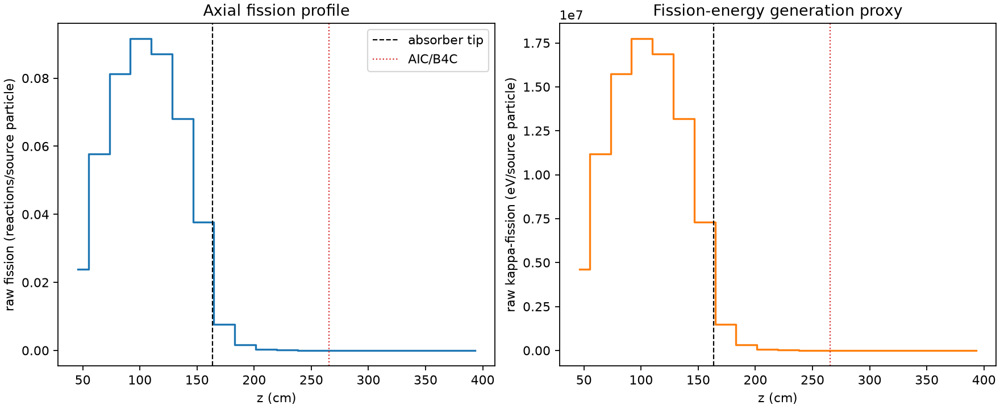
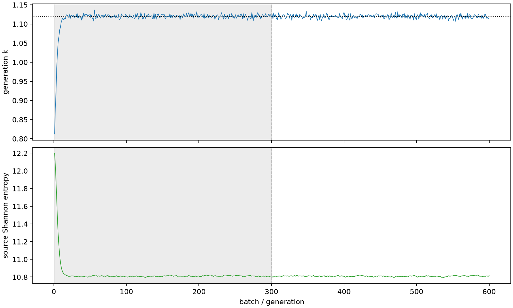

| field | value |
|---|---|
| experiment | V2-STAGE_128_OGRENCI_04-0004 |
| k | 1.11976220545432 |
| MC standard error | 0.00018885230407230056 |
| seconds | 6923.854481729999 |
| acceptance | not_assessed |
| convergence | review_required |
Completed is output integrity only; physical and statistical review required. Zero tallies do not prove zero production or zero uncertainty.
| diagnostic | value |
|---|---|
| geometric fuel voxels | 5280 |
| zero fission tally voxels | 1405 |
| low signal fuel voxels | 2378 |
| low signal fission share | 5.131399502208599e-05 |
| low signal kappa share | 5.134155397743965e-05 |
| important fission share | 0.9501061214097037 |
| previous filter included | 2902 |
| duration estimate s | 1562.5173488400023 |
| actual minus estimate s | 5361.337132889997 |
| fission relative MC error | statistics |
|---|---|
| all_geometric_fuel | {"voxels": 5280, "positive_mean_voxels": 3875, "zero_mean_voxels": 1405, "undefined_relative_error_voxels": 1405, "median": 0.01561187157776183, "p95": 0.9590414557080316, "maximum": 1.0000000000000002} |
| low_signal | {"voxels": 2378, "positive_mean_voxels": 973, "zero_mean_voxels": 1405, "undefined_relative_error_voxels": 1405, "median": 0.6150015998974026, "p95": 1.0, "maximum": 1.0000000000000002} |
| important_95pct | {"voxels": 1700, "positive_mean_voxels": 1700, "zero_mean_voxels": 0, "undefined_relative_error_voxels": 0, "median": 0.005539276289438597, "p95": 0.008934238567186838, "maximum": 0.009902591065072125} |
| outside_previous_filter | {"voxels": 2378, "positive_mean_voxels": 973, "zero_mean_voxels": 1405, "undefined_relative_error_voxels": 1405, "median": 0.6150015998974026, "p95": 1.0, "maximum": 1.0000000000000002} |
| kappa_fission relative MC error | statistics |
|---|---|
| all_geometric_fuel | {"voxels": 5280, "positive_mean_voxels": 3875, "zero_mean_voxels": 1405, "undefined_relative_error_voxels": 1405, "median": 0.01558565787479697, "p95": 0.959039158143914, "maximum": 1.0000000000000002} |
| low_signal | {"voxels": 2378, "positive_mean_voxels": 973, "zero_mean_voxels": 1405, "undefined_relative_error_voxels": 1405, "median": 0.6139052484314508, "p95": 1.0, "maximum": 1.0000000000000002} |
| important_95pct | {"voxels": 1700, "positive_mean_voxels": 1700, "zero_mean_voxels": 0, "undefined_relative_error_voxels": 0, "median": 0.0055325552175532824, "p95": 0.008924667280948843, "maximum": 0.00989050350564794} |
| outside_previous_filter | {"voxels": 2378, "positive_mean_voxels": 973, "zero_mean_voxels": 1405, "undefined_relative_error_voxels": 1405, "median": 0.6139052484314508, "p95": 1.0, "maximum": 1.0000000000000002} |
| axial bin | fission share | kappa-fission share |
|---|---|---|
| 1 | 0.052076351957209575 | 0.052078348440934646 |
| 2 | 0.12626991392376197 | 0.1262682048365185 |
| 3 | 0.17782968787093076 | 0.17782704859004414 |
| 4 | 0.20037569046204304 | 0.20037291059810228 |
| 5 | 0.19050145243076153 | 0.19049856152523162 |
| 6 | 0.14906689909410611 | 0.14906497062174903 |
| 7 | 0.08258321705162248 | 0.08258368804008523 |
| 8 | 0.01671790422918228 | 0.016725138046210536 |
| 9 | 0.003567748244840975 | 0.0035694649993950646 |
| 10 | 0.0007880306722027086 | 0.0007884487670327593 |
| 11 | 0.00017322957300158645 | 0.00017331446848062865 |
| 12 | 3.808534533790548e-05 | 3.810349429590437e-05 |
| 13 | 9.283576929767263e-06 | 9.289526916775164e-06 |
| 14 | 2.2205379536243968e-06 | 2.2219748040803277e-06 |
| 15 | 2.417840061582559e-07 | 2.4269699394414895e-07 |
| 16 | 4.324610954138847e-08 | 4.337320491284995e-08 |
| 17 | 0.0 | 0.0 |
| 18 | 0.0 | 0.0 |
| 19 | 0.0 | 0.0 |
| 20 | 0.0 | 0.0 |
Histories include the inactive-to-active transition at batch 300. kappa-fission approximates fission energy production, not total heat deposition.

